Installation using the Web Console
Red Hat Openshift Data Science is available as an operator via Openshift Operator Hub. You will install the Red Hat Openshift Data Science operator V2 using the Openshift web console in this section.
Installation of Openshift Data Science dependecies
As described in the General Information about Installation section you may need to install other operators depending on the components and features of Openshift Data Science you want to use. In general not installing dependencies before the Red Hat Openshift Data Science does not impact the installation process itself, however it may impact initialization of the components that depend on them. Hence it’s better to install the dependencies beforehand.
- Red Hat Openshift Pipelines Operator
-
The Red Hat Openshift Pipelines Operator is required if you want to install the Red Hat Openshift Data Science Pipelines component.
- NVIDIA GPU Operator
-
The NVIDIA GPU Operator is required for GPU support in Red Hat Openshift Data Science.
- Node Feature Discovery Operator
-
The Node Feature Discovery Operator is a prerequisity for the NVIDIA GPU Operator.
The following demonstration shows the installation of the Red Hat Openshift Pipelines Operator which is a dependency of the Data Science Pipelines component installed by default. Installation of the two other operators is very similar.
Demo: Installation of the Red Hat Openshift Pipelines operator
-
Login to Red Hat Openshift using a user which has the cluster-admin role assigned.
-
Navigate to Operators → OperatorHub and search for Red Hat Openshift Pipelines
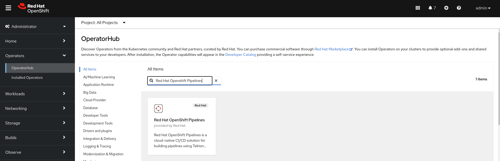 -
Click on the Red Hat Openshift Pipelines operator and in the pop up window click on Install to open the operator’s installation view.
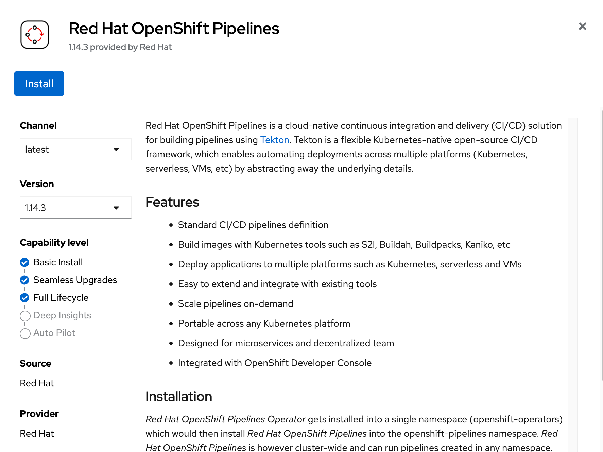 -
In the installation view choose the Update channel and the Update approval parameters. You can accept the default values. The Installation mode and the Installed namespace parameters are fixed.
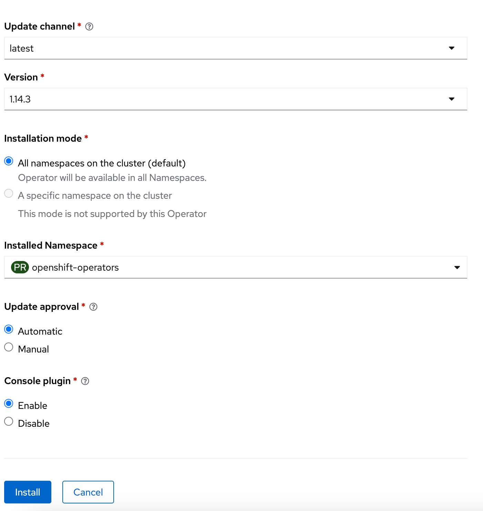 -
Click on the Install button at the bottom of to view the to proceed with the installation. A window showing the installation progress will pop up.
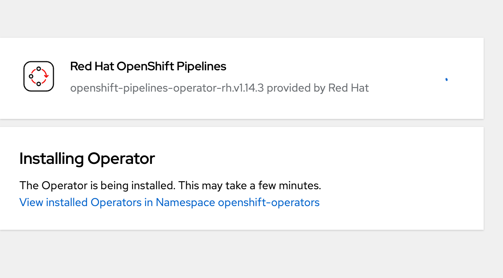 -
When the installation finishes the operator is ready to be used by the Red Hat Openshift Data Science.
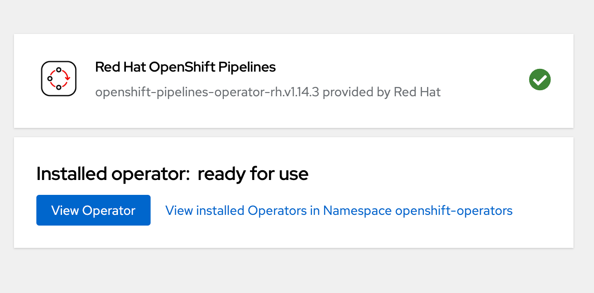
Demo: Installation of the Red Hat Openshift Data Science operator
| The installation requires a user with the cluster-admin role |
-
Login to the Red Hat Openshift using a user which has the cluster-admin role assigned.
-
Navigate to Operators → OperatorHub and search for Red Hat Openshift Data Science. >>>>>>> jtesar/chapter1-web-console-install
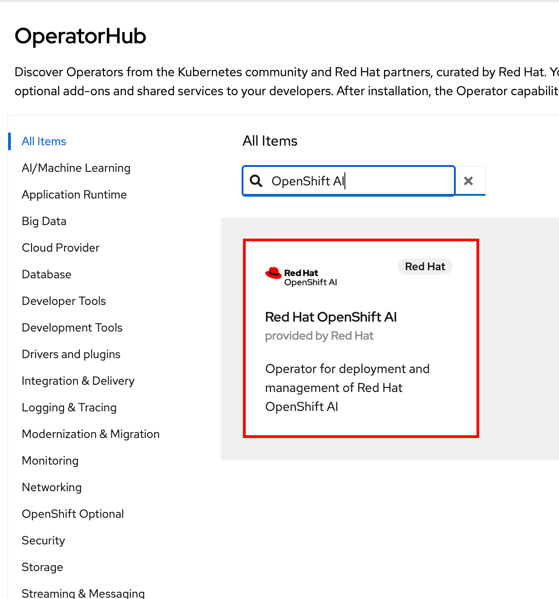 -
Click on the Red Hat Openshift Data Science operator and in the pop up window click on Install to open the operator’s installation view.
Make sure you select Openshift Data Science from Red Hat not the Community version. 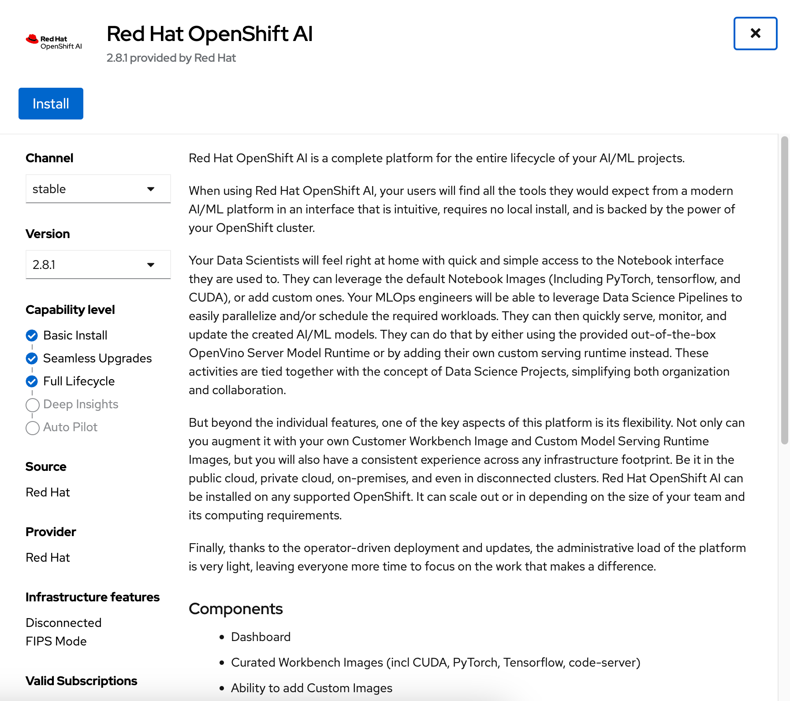 -
In the installation view window choose the embedded Update Channel, Manual Update approval and keep the default Installed Namespace. Click on the Install button to start the installation.
-
Approve the installation.
Operator Installation progress window will pop up. The installation may take a couple of minutes.
-
When the operator’s installation is finished, click on the Create DataScienceCluster button to create and configure your cluster.
-
In the Create DataScienceCluster view select components that will be installed and managed by the operator.
There are following components to choose from:
-
CodeFlare: CodeFlare simplifies the integration, scaling and acceleration of complex multi-step analytics and machine learning pipelines on the hybrid multi-cloud.CodeFlare, an open-source framework for simplifying the integration and efficient scaling of big data and AI workflows onto the hybrid cloud. CodeFlare is built on top of Ray, an emerging open-source distributed computing framework for machine learning applications. CodeFlare extends the capabilities of Ray by adding specific elements to make scaling workflows easier.
-
Ray: Ray is an open technology for “fast and simple distributed computing.” It makes it easy for data scientists and application developers to run their code in a distributed fashion. It also provides a lean and easy interface for distributed programming with many different libraries, best suited to perform machine learning and other intensive compute tasks.
-
Dashboard: A web dashboard that displays installed Data Science components with easy access to component UIs and documentation
-
Data Science Pipelines: Data Science Pipelines allow building portable machine learning workflows with data science pipelines, using Docker containers. This enables you to standardize and automate machine learning workflows to enable you to develop and deploy your data science models.
-
KServe: Kserve, or KFServing, is a Kubernetes-based serverless framework for inferencing (scoring) deep learning models. It provides a consistent and Kubernetes-native way to deploy, serve, and manage machine learning models in production environments. KServe is designed to be scalable and efficient, allowing for automatic scaling of model serving based on demand.
-
ModelMeshServing: ModelMesh Serving is the Controller for managing ModelMesh, a general-purpose model serving management/routing layer.
-
Workbenches: Workbenches allow to examine and work with data models in an isolated area. It enables you to create a new Jupyter notebook from an existing notebook container image to access its resources and properties. For data science projects that require data to be retained, you can add container storage to the workbench you are creating.
For this demonstration accept the default (pre-selected) components selection - Dashboard, Data Science Pipelines, Model Mesh Serving and Workbenches.
You can choose to create the DataScienceCluster using either the Form view or the YAML View. The Form view is a web based form and 'YAML view' is based on a YAML definition of the DataScience cluster resource. The following picture shows the Form view.
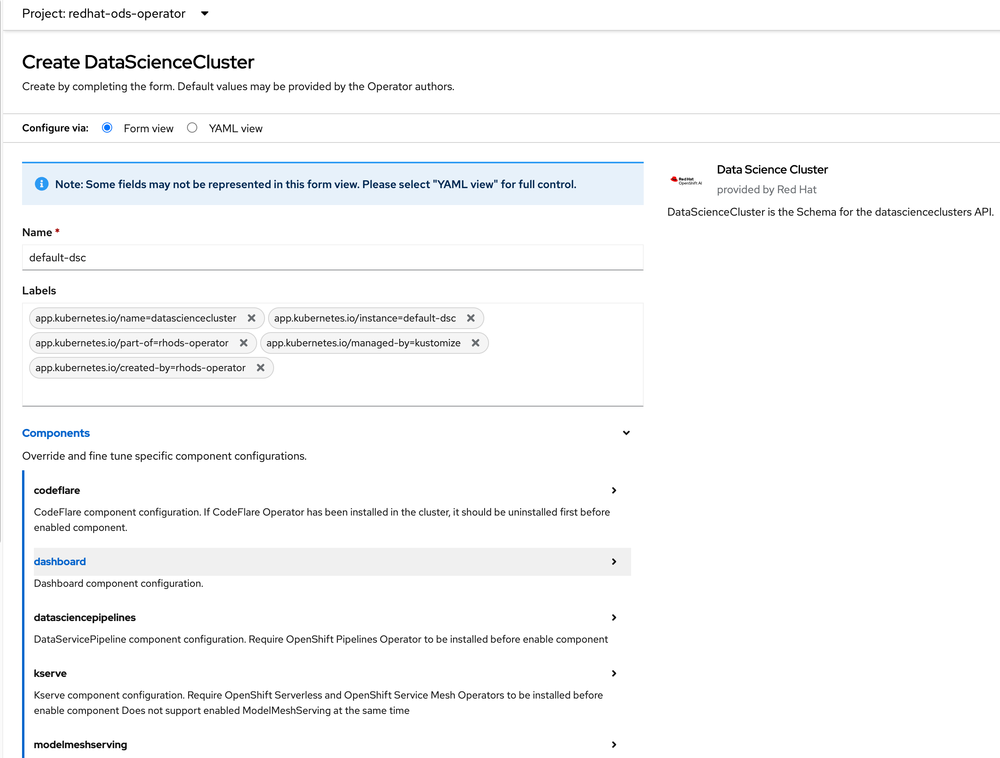If you choose the YAML view, you are presented with a template of the YAML DataScienceCluster resource definition similar to the one below.
apiVersion: datasciencecluster.opendatahub.io/v1 kind: DataScienceCluster metadata: name: default labels: app.kubernetes.io/name: datasciencecluster app.kubernetes.io/instance: default app.kubernetes.io/part-of: rhods-operator app.kubernetes.io/managed-by: kustomize app.kubernetes.io/created-by: rhods-operator spec: components: codeflare: managementState: Removed (1) dashboard: managementState: Managed (2) datasciencepipelines: managementState: Managed kserve: managementState: Removed modelmeshserving: managementState: Managed ray: managementState: Removed workbenches: managementState: Managed1 For components you do not want to install use Removed 2 For components you want to install and manage by the operator use Managed After naming the cluster and choosing the components you wish the operator to install and manage click on the Create button.
-
-
After creating the DataScienceCluster a view showing the DataScienceCluster details opens. Wait until the status of the cluster reads Phase: Ready. This represents the status of the whole cluster.
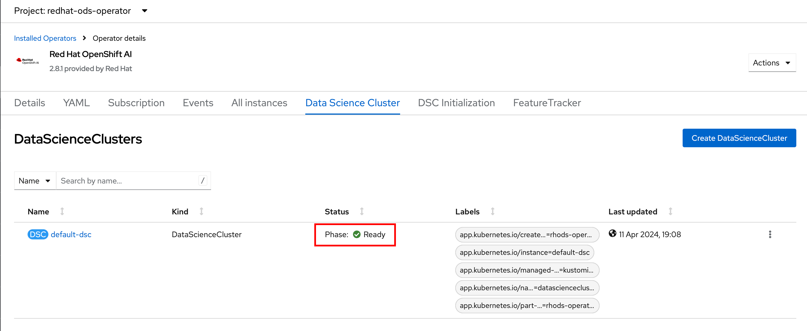You may also check the status of individual installed components by looking at their conditions. Click on the default cluster and switch to the YAML view. Scroll down to view conditions.
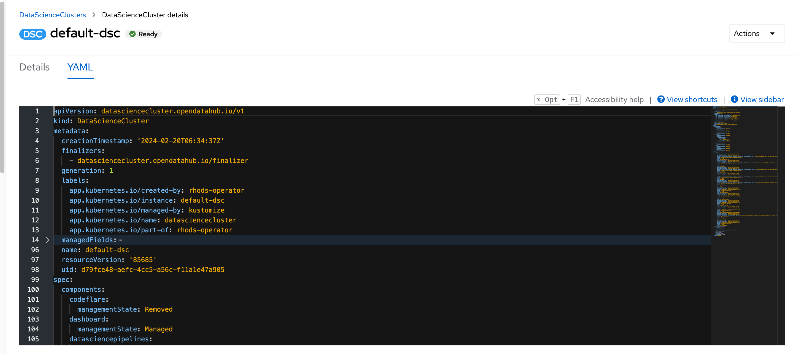Each condition is represented by a type and a status. The Type is a string describing the condition, for instance odh-dashboardReady and the status says whether it is true or not. The following example shows the Ready status of the Dashboard component.
- lastHeartbeatTime: '2023-11-13T10:53:20Z' lastTransitionTime: '2023-11-13T10:53:20Z' message: Component reconciled successfully reason: ReconcileCompleted status: 'True' (1) type: odh-dashboardReady (2)
1 Status of the condition. True means that the condition is met, False means that the condition is not met. 2 Type represents the meaning of the condition. Together with the value of status you can assess the state of the component. In this example type=odh-dashboardReady and status=True means that the Dashboard component is ready. Similarly to the example above other Red Hat Data Science components have their condition types. The following list shows the condition types for the Red Hat Data Science components.
-
rayReady
-
codeflareReady
-
model-meshReady
-
workbenchesReady
-
data-science-pipelines-operatorReady
-
odh-dashboardReady
-
-
The operator should be installed and configured now. In the applications window in the right upper corner of the screen the Red Hat Openshift Data Science dashboard should be available.
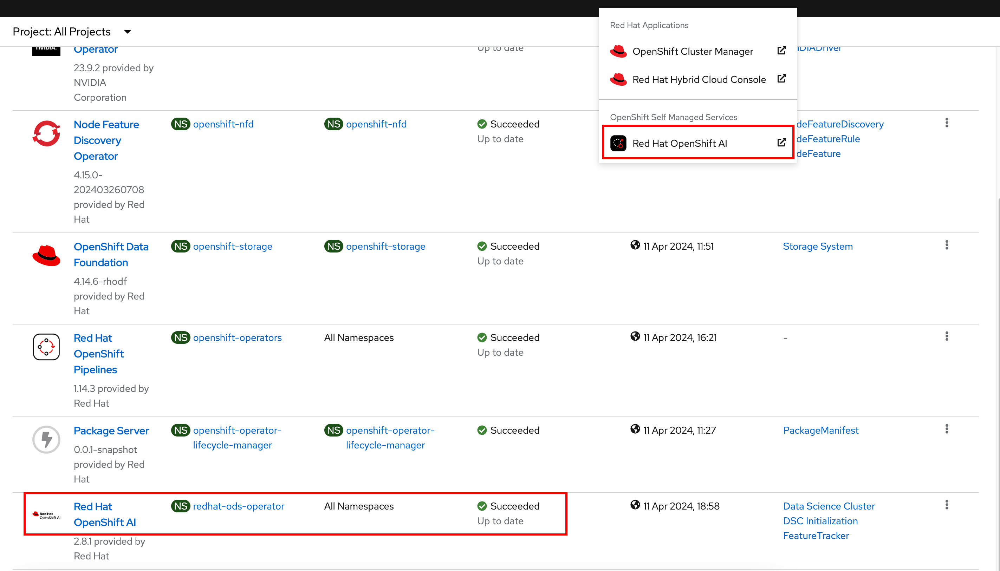 -
Click on the Red Hat Openshift Data Science button to log in to the Red Hat Openshift Data Science.

It may take a while to start all the service pods hence the login window may not be accessible immediately. If you are getting an error, check the status of the pods in the project redhat-ods-applications. Navigate to Workloads → pods and select project redhat-ods-applications. All pods must be running and be ready. If they are not, wait until they become running and ready. 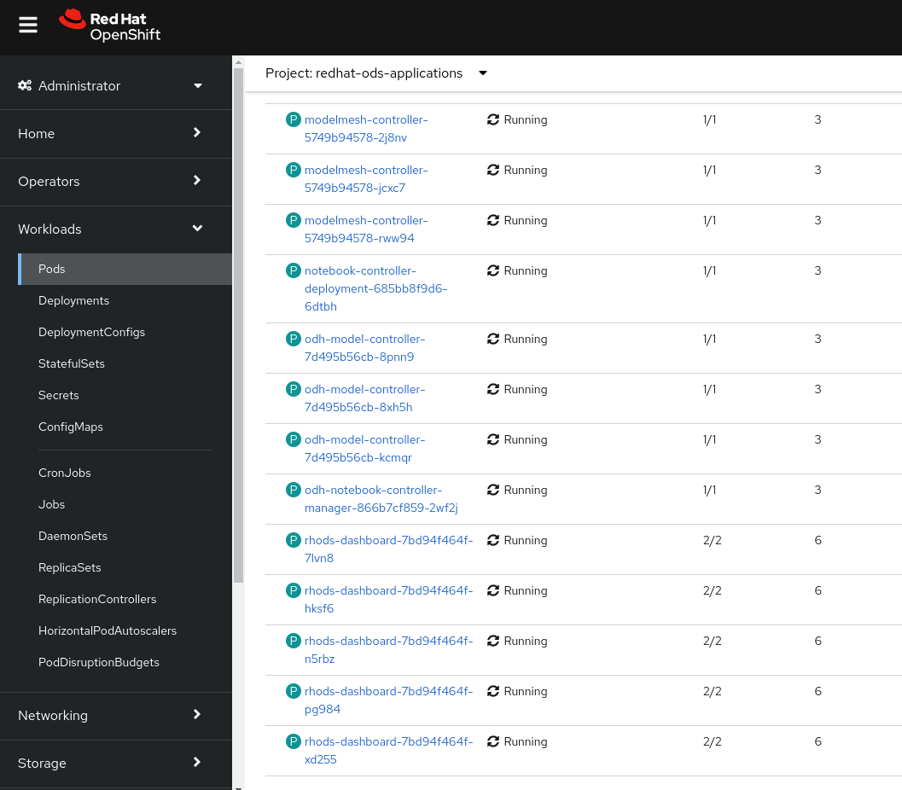